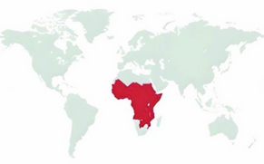

Trypanosoma brucei Interactive Module
Interactive web app for human African trypanosomiasis: life cycle, diagnosis, morphology, ecology, climate links, and One Health. Core biological content is aligned with CDC / DPDx / WHO descriptions.
Purpose of this application
This module is built around Trypanosoma brucei, the protozoan parasite causing human African trypanosomiasis (sleeping sickness). It is meant as an interactive study and teaching tool, not a clinical decision system.
- Explore a CDC-aligned life cycle walkthrough.
- Play an Oregon Trail–style “T. brucei Trail” scenario that follows the parasite from human → tsetse → human.
- Use a quiz focused on life cycle, diagnosis, and ecology, with percentage scoring and attempt tracking.
- Practice structure recognition using a morphology labeling game on a bloodstream trypomastigote diagram.
- Connect biology to ecology, climate change, geography, and One Health.
Design intent: clear enough for early learners, but accurate enough that a grad student or clinician-in-training can use it without cringing.
Life cycle summary (CDC / DPDx)
T. brucei gambiense and T. b. rhodesiense are transmitted by tsetse flies (Glossina spp.). The parasite alternates between a mammalian host and the fly, switching forms to survive each environment.
- Tsetse bite → metacyclic stage. An infected fly injects metacyclic trypomastigotes into skin tissue during a blood meal. Parasites enter the lymph and blood.
- Slender bloodstream forms. In the human host, parasites differentiate into slender bloodstream trypomastigotes that proliferate in blood and lymph, later invading the CSF in late stages.
- Density-dependent stumpy forms. At high parasite density, quorum-sensing signals drive differentiation into stumpy bloodstream forms: non-dividing but pre-adapted for survival in the tsetse midgut.
- Fly midgut → procyclic forms. When a tsetse feeds, it ingests stumpy forms. In the midgut they transform into procyclic trypomastigotes and multiply.
- Migration to salivary glands. Parasites move to the salivary glands, become epimastigotes, then differentiate into metacyclic trypomastigotes ready for the next mammalian host.
In natural human infection cycles, the stumpy form remains the key transmission stage for tsetse-dependent spread.
The Trail game uses this same backbone so players internalise which stages matter for transmission and which bottlenecks can break the cycle.
“T. brucei Trail” – life-cycle scenario game
Text-based, Oregon Trail–style scenario: you “play” from the parasite’s perspective. Choices are constrained so that correct answers stay consistent with CDC / DPDx life-cycle checkpoints.
Knowledge check – life cycle, diagnosis & ecology
Questions here are aligned with CDC clinical guidance and DPDx descriptions of human African trypanosomiasis, plus ecology themes from published vector studies.
Ecology, climate & geographical distribution
T. brucei is not “everywhere” – it is tightly tied to the distribution of tsetse flies and the landscapes where flies, humans, and livestock overlap. Most reported human cases occur in specific belts of sub-Saharan Africa.
- Gambiense belt – West & Central Africa. T. b. gambiense causes a chronic form of sleeping sickness across riverine and forest–savanna mosaic zones in countries such as the Democratic Republic of the Congo and neighbouring states. Communities most affected are often remote rural villages near rivers and gallery forest, where people farm, fish, or collect wood and have regular tsetse exposure.
- Rhodesiense belt – East & Southern Africa. T. b. rhodesiense is more acute and linked to savanna and game areas in countries such as Tanzania, Malawi, Uganda, and Zambia. Here, risk often concentrates in cattle-keeping communities, game reserves, and tourist or hunting areas where livestock and wildlife reservoirs sustain transmission.
- Climate-driven range shifts. Dynamic models combining climate and land cover show that warming and altered rainfall can contract tsetse habitat in some lowland zones while opening new suitable areas at higher elevation or different latitudes. That means the “red zone” on maps can shrink in some places but reappear somewhere else.
- Who carries the burden? The people most affected are typically rural, low-income communities with limited access to health care: farmers, fishers, pastoralists, and their families. Animal trypanosomiasis in cattle and other livestock hits the same households by reducing draft power, milk, and meat, reinforcing poverty.
Take-home: sleeping sickness is a disease of specific ecologies and marginalized communities. Climate change, land use, and vector control can all redraw the risk map over time.

Geographical distribution of T. brucei. Adapted from a ResearchGate figure released under a Creative Commons Attribution 3.0 license.
Morphology game – label the bloodstream trypomastigote
Drag each structural label onto the correct region of the Trypanosoma bloodstream-form diagram. When all labels are placed, the app calculates a percentage score.
Diagram based on standard teaching illustrations of a trypomastigote (including examples from the BCC blog network and similar resources). Labels use classic parasitology terms such as undulating membrane, kinetoplast, and pellicle.

Diagnostic images (CDC DPDx)
CDC’s DPDx provides photomicrographs and life-cycle diagrams for African trypanosomiasis that can be used alongside this app in teaching.
- DPDx – African trypanosomiasis: life cycle and diagnostic stages
- DPDx Case 514 – blood smear images of T. brucei
In a classroom, instructors can project DPDx images while students navigate the Trail game, quiz, or morphology labeling activity.
One Health, burden & control
Human African trypanosomiasis has declined dramatically in reported incidence over the last few decades due to active screening and vector control, but it remains a dangerous, often fatal disease where transmission persists.
- Human burden. Untreated HAT is usually fatal once CNS involvement develops. Early-stage signs (fever, lymphadenopathy, malaise) can mimic malaria or viral illness, delaying diagnosis.
- Animal trypanosomiasis. In livestock, African trypanosomiasis (nagana) reduces productivity, milk yield, and traction power, damaging household economies and food security. Control has to consider cattle, wildlife reservoirs, and vectors together.
- Program fragility. Gains can reverse if surveillance and treatment networks weaken, if conflict disrupts health services, or if climate and land use changes shift vectors into areas without strong programs.
One Health lens: people, cattle, wildlife, and tsetse all share the same landscapes. Any long-term strategy that ignores one of those layers tends to fail or only work temporarily.
Works cited (APA style)
Core biological and clinical information is taken from CDC and WHO resources, plus peer-reviewed articles on stumpy forms, ecology, and climate. OpenAI is listed as the language model assisting with wording and interface logic. Image references for the morphology diagram and geographic map are also included.
CDC & DPDx
- Centers for Disease Control and Prevention. (n.d.-a). Sleeping sickness (African trypanosomiasis): About. U.S. Department of Health & Human Services. https://www.cdc.gov/sleeping-sickness/about/index.html
- Centers for Disease Control and Prevention. (n.d.-b). Sleeping sickness (African trypanosomiasis): Causes. U.S. Department of Health & Human Services. https://www.cdc.gov/sleeping-sickness/causes/index.html
- Centers for Disease Control and Prevention. (n.d.-c). Sleeping sickness (African trypanosomiasis): Prevention. U.S. Department of Health & Human Services. https://www.cdc.gov/sleeping-sickness/prevention/index.html
- Centers for Disease Control and Prevention. (n.d.-d). Clinical guidance for human African trypanosomiasis. U.S. Department of Health & Human Services. https://www.cdc.gov/sleeping-sickness/hcp/clinical-guidance/index.html
- Centers for Disease Control and Prevention. (n.d.-e). Clinical care of human African trypanosomiasis. U.S. Department of Health & Human Services. https://www.cdc.gov/sleeping-sickness/hcp/clinical-care/index.html
- Centers for Disease Control and Prevention. (n.d.-f). DPDx – Laboratory identification of parasites of public health concern: Trypanosomiasis, African. U.S. Department of Health & Human Services. https://www.cdc.gov/dpdx/trypanosomiasisafrican/index.html
- Centers for Disease Control and Prevention. (2020, April). DPDx case #514 – African trypanosomiasis. U.S. Department of Health & Human Services. https://www.cdc.gov/dpdx/monthlycasestudies/2020/case514.html
WHO & reference facts
- World Health Organization. (2023). Trypanosomiasis, human African (sleeping sickness) – Fact sheet. World Health Organization. https://www.who.int/news-room/fact-sheets/detail/trypanosomiasis-human-african-(sleeping-sickness)
Stumpy forms, life-cycle stages & evolution
- Nolan, D. P., & Gull, K. (2000). Slender and stumpy bloodstream forms of Trypanosoma brucei brucei: A differentiation pathway linking density sensing with cell cycle control and transmission. European Journal of Biochemistry, 267(22), 6970–6978.
- Rojas, F., & Matthews, K. R. (2019). Quorum sensing in African trypanosomes. Trends in Parasitology, 35(5), 434–445.
- Mulindwa, J., De Preez, G., Szempruch, A. J., et al. (2021). In vitro culture of freshly isolated bloodstream-form Trypanosoma brucei brucei selects for parasites that have lost stumpy-form differentiation capacity. PLOS Neglected Tropical Diseases, 15(7), e0009738.
- Oldrieve, G. R., et al. (2024). Mechanisms of life cycle simplification in African trypanosomes. Nature Communications.
Ecology, climate & vector distribution
- Messina, J. P., Moore, N., DeVisser, M. H., McCord, P. F., & Walker, E. D. (2012). Climate change and risk projection: Dynamic spatial models of tsetse and African trypanosomiasis in Kenya. Annals of the Association of American Geographers, 102(5), 1038–1048.
- Moore, N., Messina, J. P., & Gamba, K. (2010). A landscape and climate data logistic model of tsetse distribution in Kenya. PLOS ONE, 5(7), e11809.
- Lord, J. S., Hargrove, J. W., Torr, S. J., & Vale, G. A. (2018). Climate change and African trypanosomiasis vector populations in Zimbabwe’s Zambezi Valley. Parasites & Vectors, 11, 454.
- Nnko, H. J., Ngonyani, D., et al. (2021). Potential impacts of climate change on geographical distribution of tsetse flies and African trypanosomiasis in Tanzania. PLOS Neglected Tropical Diseases, 15(2), e0009081.
Images & diagrams
- BCC Blog Network. (n.d.). Trypanosoma brucei morphology diagram [Illustration]. BCC Blog Network. Retrieved from the BCC Blog Network website.
- ResearchGate. (n.d.). Geographical distribution of Trypanosoma brucei in the world [Map]. ResearchGate. Retrieved from the ResearchGate website (Creative Commons Attribution 3.0 license).
AI assistance
- OpenAI. (2025). ChatGPT (GPT-5.1 Thinking) [Large language model]. https://www.openai.com/